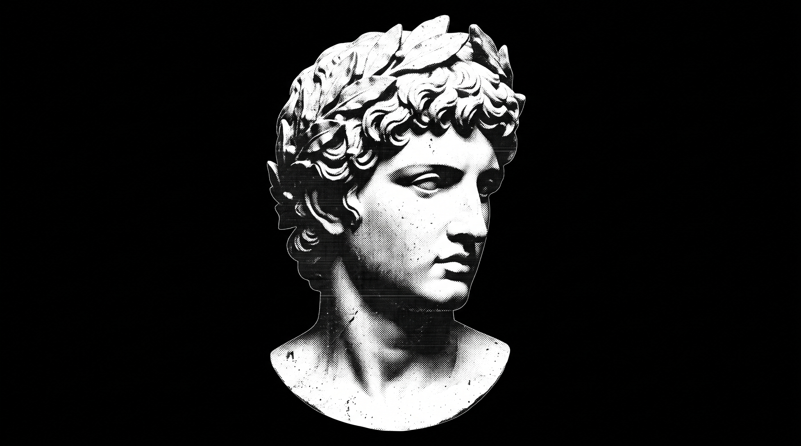

DISPONÍVEL PARA ESTÁGIO EM TI
Olá, eu sou
Hugo.
Transformo ideias em experiências digitais úteis, bonitas e feitas para pessoas.

ΤΕΧΝΗ / 01ESTUDO EM MÁRMORE
IDEIA · FORMA · CÓDIGOHUGO / 2026
01SOBRE MIM
APRENDER FAZENDO
Curioso por natureza.
Construtor por escolha.
Sou Hugo, tenho 21 anos e curso Informática no Grau Técnico. Gosto de tirar ideias do papel, experimentar tecnologias e entender como cada detalhe pode deixar um produto digital mais simples de usar.
Estou construindo minha experiência através de projetos próprios — sempre aprendendo algo novo no processo.
Conheça meus projetos ↘01 / FORMAÇÃOInformática · Grau Técnico
02 / INTERESSESWeb · Produtos digitais
03 / PRÓXIMO PASSOEstágio em tecnologia ↗
02PROJETOS SELECIONADOS
FEITOS COM CURIOSIDADE
Do conceito
ao clique.
Uma seleção de projetos que desenvolvi para explorar interfaces, produtos e soluções para a web.
03FERRAMENTAS
CURIOSIDADE SEM FIM
Aprendendo
uma ferramenta
de cada vez.
Meu conjunto de ferramentas cresce junto com cada projeto.
HTMLCSSJavaScriptTypeScriptReactNext.jsNode.jsTailwind CSSC# / .NETSupabaseGit & GitHubGodot
SEMPRE EM CONSTRUÇÃO↗
04CONTATO
TEM UMA IDEIA?
Vamos dar
forma a ela.
hugodevlopper@gmail.com ↗
Disponível para oportunidades de estágio em TI e novos projetos.